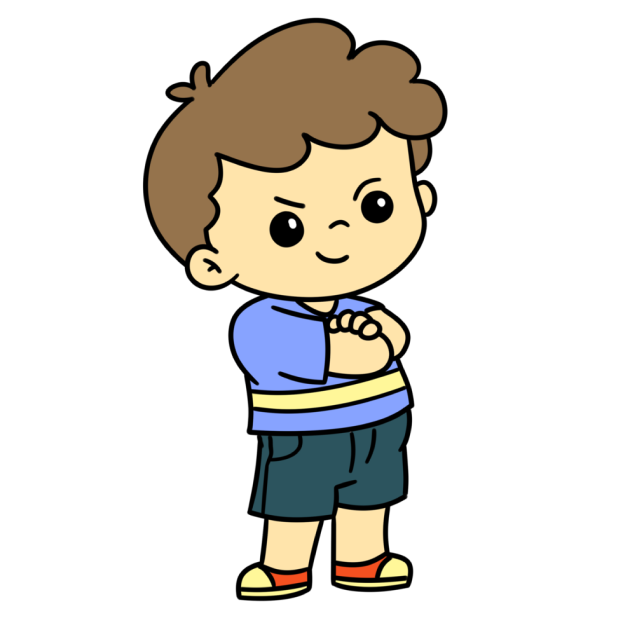

Sua doação muda o jogo
Doações são essenciais para a AUMA, permitindo financiar terapias, apoio educacional e atividades sociais que beneficiam diretamente pessoas com Transtorno do Espectro Autista (TEA) e suas famílias. Cada contribuição ajuda a ampliar o alcance e o impacto positivo da AUMA na vida de seus beneficiários, promovendo uma sociedade mais inclusiva e solidária.
DOE AQUI